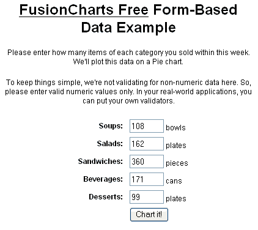
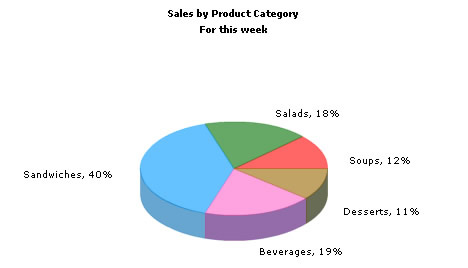

Using FusionCharts with ASP > Charting Data from Forms |
In this section, we'll show you how to use FusionCharts with ASP to plot data collected in forms. We'll build a simple restaurant sales example, where the user will enter the items sold by a restaurant in a given week. This data will be submitted in a form to the server. We'll acquire this data and plot in on a chart. For the sake of simplicity, we wouldn't do any processing on this data. However, your real life applications might process data before presenting it on the chart. Before you go further with this page, we recommend you to please see the previous section "Basic Examples" as we start off from concepts explained in that page. |
| The code examples contained in this page are present in Download Package > Code > ASP > FormBased folder. |
| Building the Form |
| The form is contained in Default.asp and looks as under: |
|  |
| It's a very simple form which submits to Chart.asp. As such, we wouldn't go into the code of this form. You can directly open the source from download and see it. |
| Requesting the data and Creating the Chart |
| The work of requesting the data from submitted form and creating the chart is done in Chart.asp, present in the same folder. It contains the following code: |
<%@ Language=VBScript %> </BODY> |
As you can see in the above code, we're doing the following:
When you finally run the code, you'll see a chart as under: |
|  |